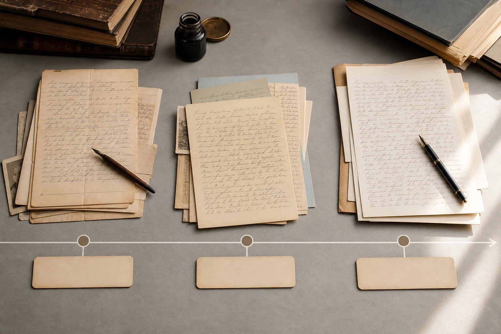
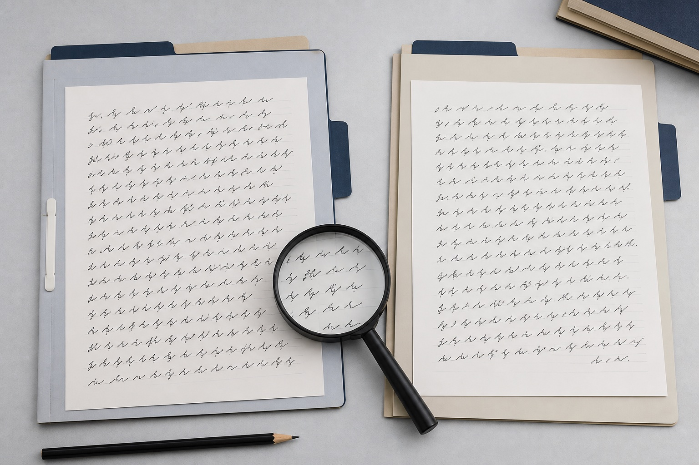

南京笔迹鉴定材料跨了几年，怎样建立时间对照？
不同时间形成的纸面材料，不能只按新旧排列。南京站介绍模仿笔迹、模仿签名、模仿签字和笔迹鉴定资料怎样标注时间与来源。

不同时间形成的纸面材料，不能只按新旧排列。南京站介绍模仿笔迹、模仿签名、模仿签字和笔迹鉴定资料怎样标注时间与来源。
与待分析文件形成时间接近的自然样本，更能反映当时的书写状态和稳定习惯。本文从南京实际资料整理角度说明页面、版本与原图的保存方法。
三种材料的信息层级不同，目录中应先写原件，再写复制方式和对应页码。本文从南京实际资料整理角度说明页面、版本与原图的保存方法。
合同落款、快递签收和签到表属于不同场景，应先确定常用版本，再在组内比较。本文从南京实际资料整理角度说明页面、版本与原图的保存方法。

南京站笔迹鉴定资料新增同期样本提示，围绕南京模仿笔迹、模仿签名、模仿签字和笔迹鉴定更新服务资料。
南京笔迹鉴定同期样本怎么找？模仿笔迹对比资料说明，围绕南京模仿笔迹、模仿签名、模仿签字和笔迹鉴定介绍资料准备方法。
围绕模仿笔迹、模仿签名、模仿签字和笔迹鉴定整理实用资料。

介绍服务内容、样本要求、价格因素和办理流程。

介绍签名服务范围、签字样本要求、费用与周期。

介绍笔迹鉴定范围、对比材料、费用周期和常见问题。

介绍手写文件、个人字体、字符数量和交付方式。